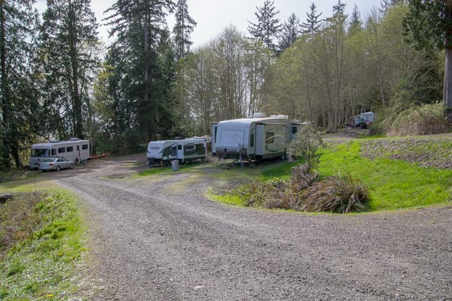
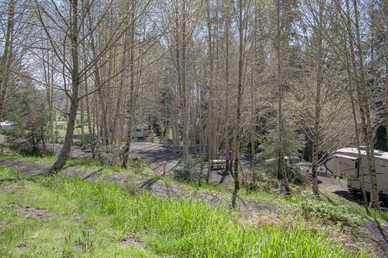
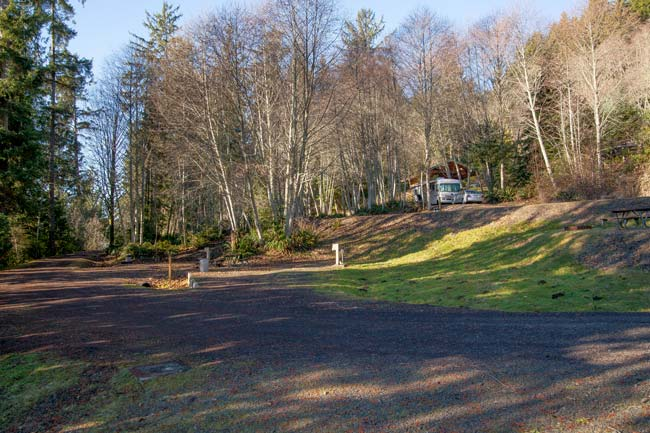
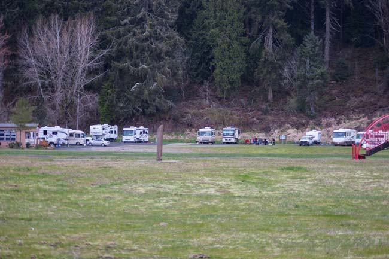

RV Park Camping in Vista Park
 The seven sites nestled in the trees have more than enough room for larger groups. They are close to our newest shelter that include a shower, restrooms and picnic area large enough for larger gatherings.
 View of RV sites 27-33 from the group gathering area above them. Come walk on the beach on the Columbia River and take a hike on our nature trail.
 The lower section of sites 27-33. These sites are the most private of the RV sites. Make a reservation today.
 These sites are the easiest to access with larger RVs. This area has access to WiFi and plenty of room for field games. All of these sites are full hook-up with the exception of S1, S2 and the site known as the Rock.